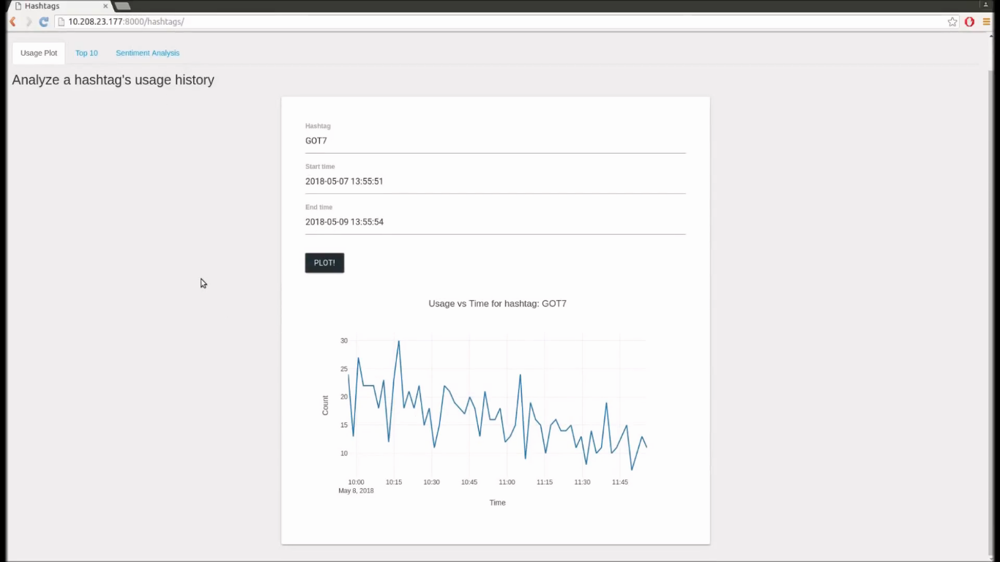
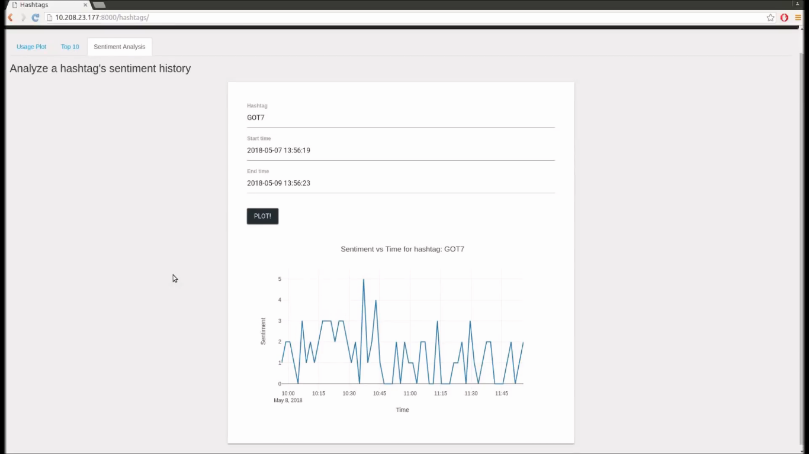
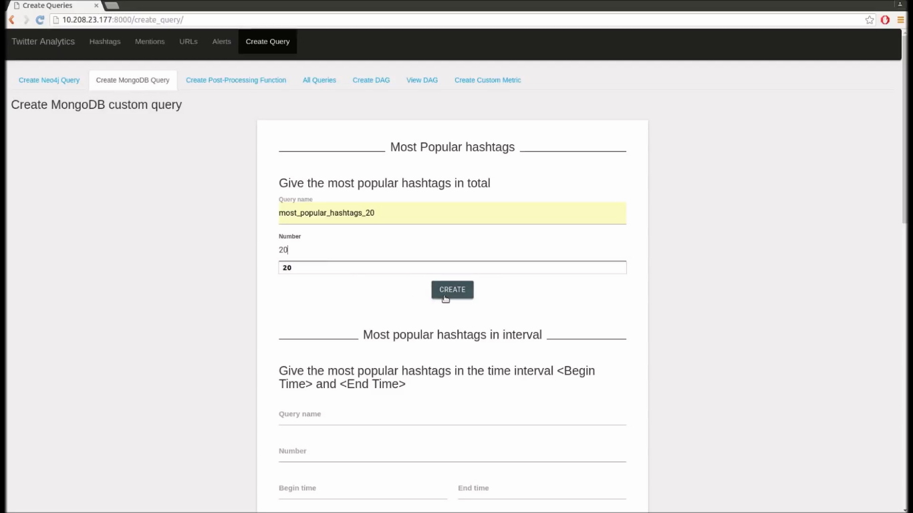
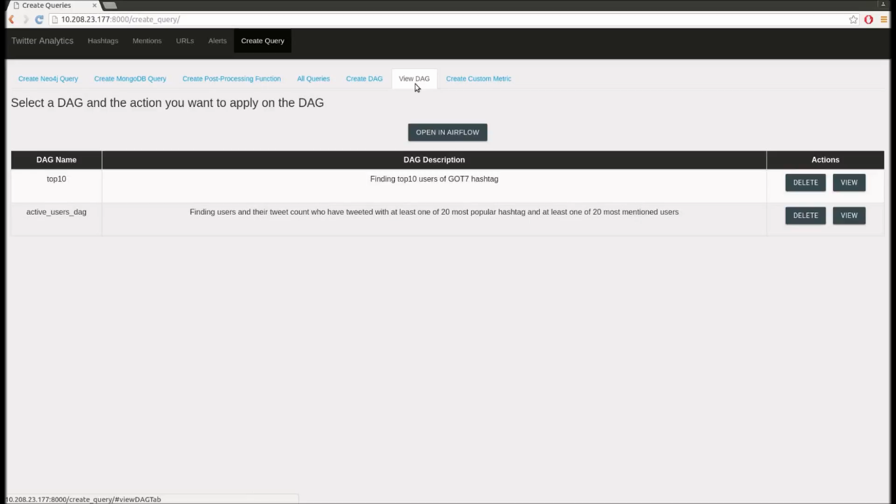
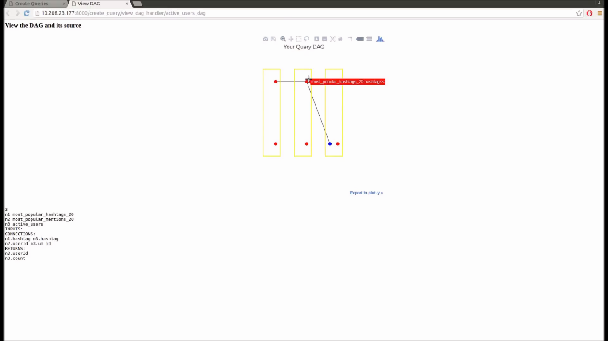
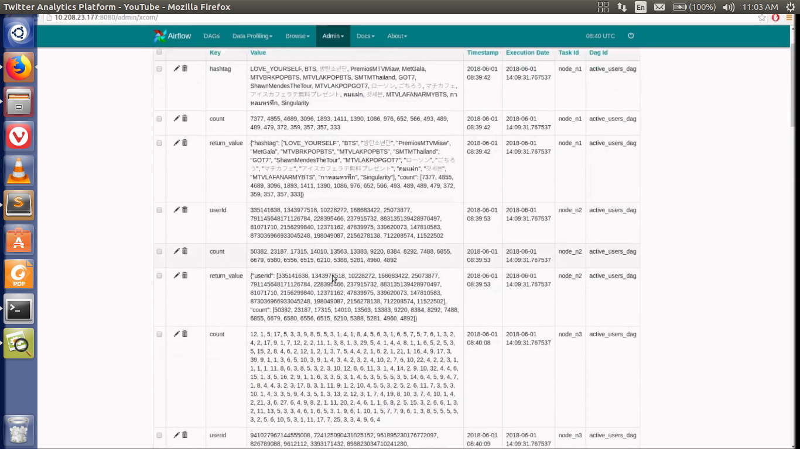
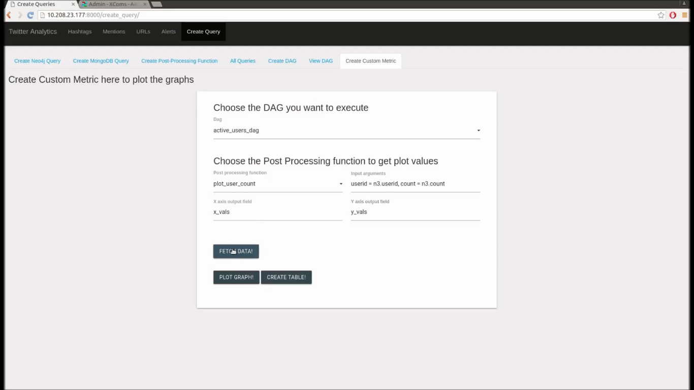
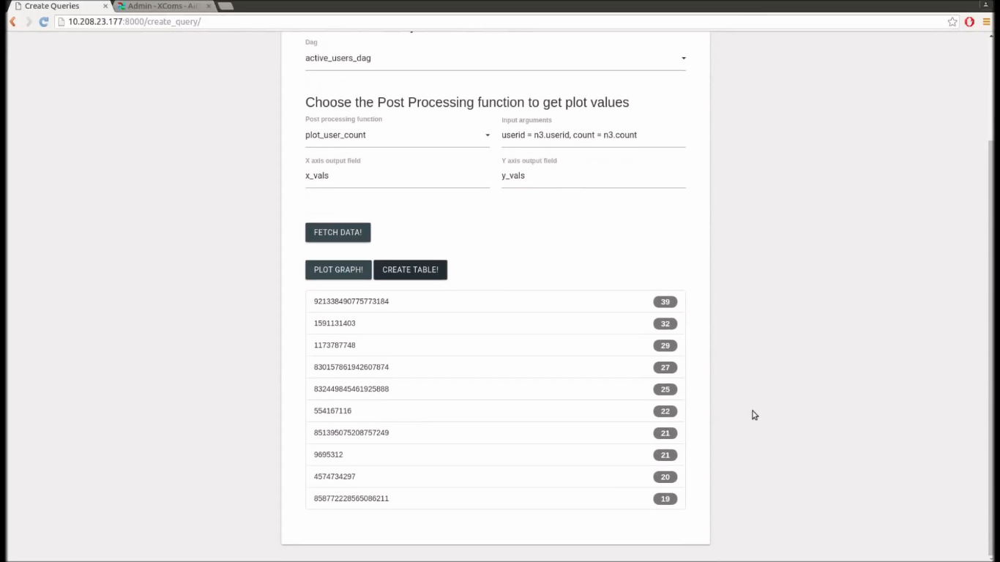
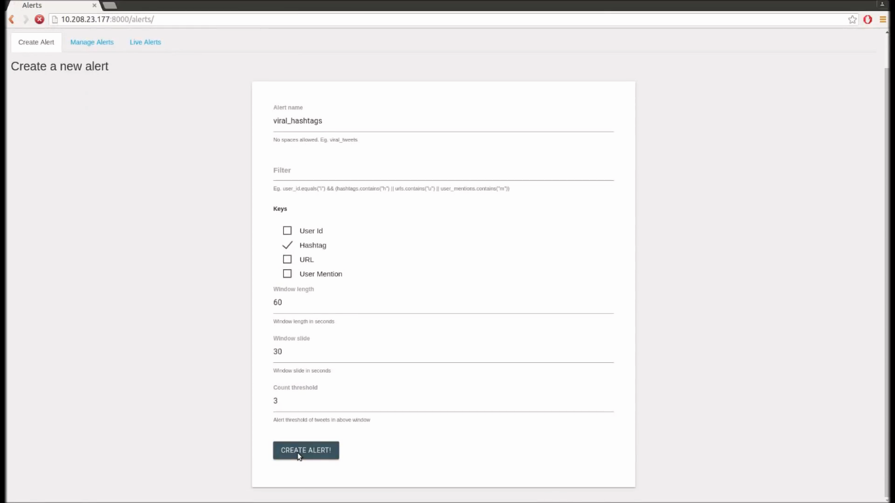
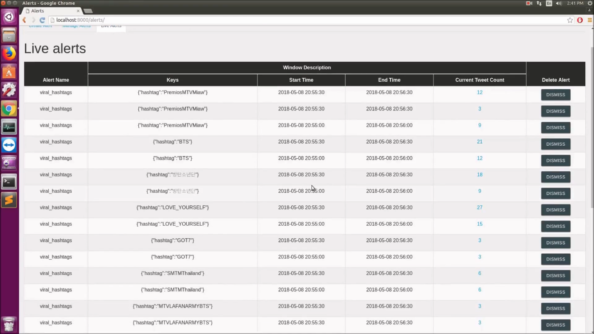

Dashboard Website¶
Major parts of the dashboard website¶
We have organised the dashboard website into tabs with each tab containing associated APIs and functionality. Each tab is futher divided into sub tabs. We enlist the major tabs and subtabs and the functionality contained there in, to give an overview of the hierarchy of the website.
Hashtags¶
This tab contains the functionality to view major statistics associated with hashtags. Though as we will see, the functionality in this tab can entirely be emulated by creating a suitable DAG, but we choose to keep a separate option to get some common stats about the common entities like hastags, user mentions and urls.
The Hashtags tab contains three subtabs:
- Top 10 : Takes as inputs the start time and the end time, to output the 10 most popular hashtags in the said interval with the number of tweets containing the hashtag
- Usage Plot : Takes as input a hashtag, start time and end time, to output the plot of how the usage(as number of tweets in which the hashtag occurs) of the hashtag has changed over the interval.
- Sentiment Plot : Takes as input a hashtag, start time and end time, to output the plot of how the sentiment associated with the hashtag has changed over the interval.
Mentions¶
The Mentions tab contains the major statistics concerning user mentions. It has the follwoing three subtabs:
- Top 10 : Takes as inputs the start time and the end time, to output the 10 most popular users in the said interval with the number of tweets in which the user is mentioned.
- Usage Plot : Takes as input a user, start time and end time, to output the plot of how the mention frequency(as number of tweets in which the user is mentioned) of the user has changed over the interval.
- Sentiment Plot : Takes as input a user, start time and end time, to output the plot of how the sentiment associated with the user has changed over the interval.
URLs¶
The URLs tab contains the major statistics concerning urls. It has the follwoing three subtabs:
- Top 10 : Takes as inputs the start time and the end time, to output the 10 most popular urls in the said interval with the number of tweets containing the url.
- Usage Plot : Takes as input a url, start time and end time, to output the plot of how the usage(as number of tweets in which the url occurs) of the url has changed over the interval.
- Sentiment Plot : Takes as input a url, start time and end time, to output the plot of how the sentiment associated with the url has changed over the interval.
Alerts¶
DAG¶
We expalin about DAGs in detail in section Composing multiple queries : DAG. We assume the reader has read though the section and is aware with the terminology.
This tab contains the functionalities to create and view DAGs. It has the following subtabs:
- Create Neo4j Query : Contains the APIs to create a neo4j queries. The user provides the inputs for query cration thorugh a simple form.
- Create MongoDB Query : Contains the APIs to create mongoDB queries.
- Create Post-Processing Function: Contains the APIs to create a post processing function. The form contains a file upload field thorugh which the file containing the python code for the function needs to be uploaded.
- All Queries : A color coded list of all queries created by the user, along with their input and output variables names. The user can delete queries from here.
- Create DAG : Compose the queries seen in the list of queries to create a DAG. The structure need to be specified in a file which needs to be uploaded.
- View DAG : Contains a list of DAGs created by the user. Also contains a button through which the user can go the airflow dashboard. Apart from that, with each DAG there is a “View” button which redirects to a page containg the strucutre code and the plotly graph of the DAG.
- Create Custom Metric : Contains a form in which the user needs to specify a DAG and a post processing function to create metric and view it either in plot/graph format.
Use Cases¶
Here we walk through some major use cases of the system with snapshots to give the reader some headway on how to use the system. The system has been designed, keeping in mind that the end user may not be much proficient in computer technology and has been strucutured to be intuitive and simple. Nonetheless, the authors feel that these use case should be enough to get the user started.
Also, please notice that the easlier use cases may be used in the later ones. So it’s better the reader goes through these in order.
Viewing top 10 popular hashtags¶
Go to the Hashtags/Top 10, enter the required fields. The list of top 10 most popular hahstags will be displayed below.
{kind=link}
{kind=link}
Lets take a hashtag and view its statsitics in below couple of use cases.
Viewing usage history of hashtag¶
Let’s see how the usage of hashtag “GOT7” has changed over a period of 2 days.
{kind=link}
Viewing sentiment history of hashtag¶
Let’s see how the sentiment about hashtag “GOT7” has changed over the same period of 2 days.
{kind=link}
Creating a mongoDB query¶
Let’s create a mongo DB query named “most_popular_hashtags_20” to give us the 20 most popular hashtags. Specify the variables and click “create” to create the query.

{kind=link}
Similarly other mongoDB queries can be created.
Creating neo4j queries¶
To crate a neo4j query we need to create user and tweet entities and relationships between them. Here we show how to create the neo4j to get userIds and their tweet counts who have used one of the hashtags from a list of hashtags atleast once and have tweeted with one of the popular user mentions from a list of userIds atleast once, mentioned in Building a DAG from queries.
Create a user variable named user with no attributes. Also create a user variable named user_mentioned having variable attribute {um_id}. The curly braces specify that the attribute is variable.
{kind=link}
Let us now create some tweets. Create a tweet named t1 having variable hashtag {hashtag}. Create a tweet t2 which has a mention of user User_mentioned, which was created above. Also, create a tweet t3 having no attributes.
{kind=link}
Lets now create some relation ships. Create the relationships, user tweeted tweet t1, user tweeted tweet t2 and user tweeted t3.
{kind=link}
So finally we have 2 user variables, 3 tweet variables and 3 relationships between the entities. This can be seen in this image where a screenshot of the tweets and relationships listing is shown.
{kind=link}
To create the query specify the return variables and the query name.
{kind=link}
Create Post processing function¶
Select a file containing the python code to create a post processing function
{kind=link}
View Queries¶
To view the queries navigate to DAG/All Queries. As you can see here, currently we have 4 queries, 2 mongo DB and 1 neo4j and 1 post processing function. Additionally, you can see the cypher code generated for the neo4j query and the code of the post processing function in this screenshot:
{kind=link}
Create DAG¶
Now let us create the DAG to get the most active users as mentioned in Building a DAG from queries. Input the name of the DAG as “activer_users_dag”, optionally the description and the file containing the structure specification of the DAG.
{kind=link}
View DAGs¶
Navigate to the View DAG subtab to view all the created DAGs.
{kind=link}
We can view a DAG by clicking “View” button against it. You can see how outputs from one query are feeding into the inputs of another query. Beneath in the screenshot you can see the structure of the DAG in code as well.
{kind=link}
Now let us view our DAG in airflow. Here you can see the tree view and the graph view of the DAG.
{kind=link}
{kind=link}
Execute the DAG in airflow and navigate to XComs list to see the outputs of all the queries. A screensot of the XComs list is provided here.
{kind=link}
Create Custom metric¶
To create the custom metric, we need to specify the DAG which we want to execute, choose a post processing function which outputs the x and y coordinates and create a mapping between the outputs of the DAG and inputs of the post processing function. Shown here is how to create a custom metric on the most active users DAG to plot the 10 top active user Ids with their number of tweets:
{kind=link}
When you click Fetch data the DAG will be executed to feed data into the post processing function. You can now view in a plot or table format by clicking on “PLOT GRAPH!” and “CREATE TABLE!” respectively. The table will look something like this:
{kind=link}
Create Alert¶
To create an alert on the tweet stream, we need to specify the alert name, the filter, choose keys on which to group and partition the tweet stream, the window length, the window slide and the count threshold. Let’s create a hashtag “viral_hashtags” to notify when a hashtag frequency exceeds 3 in the past window of 60 seconds, the window sliding ahead by 30 seconds.
{kind=link}
View Alerts¶
The alerts are generated as real time tweets are put into the kafka queue.
{kind=link}
In the end, the best way to figure out the system is to get your hands dirty with the system! To get the system on your local system, the reader should see Getting the system running